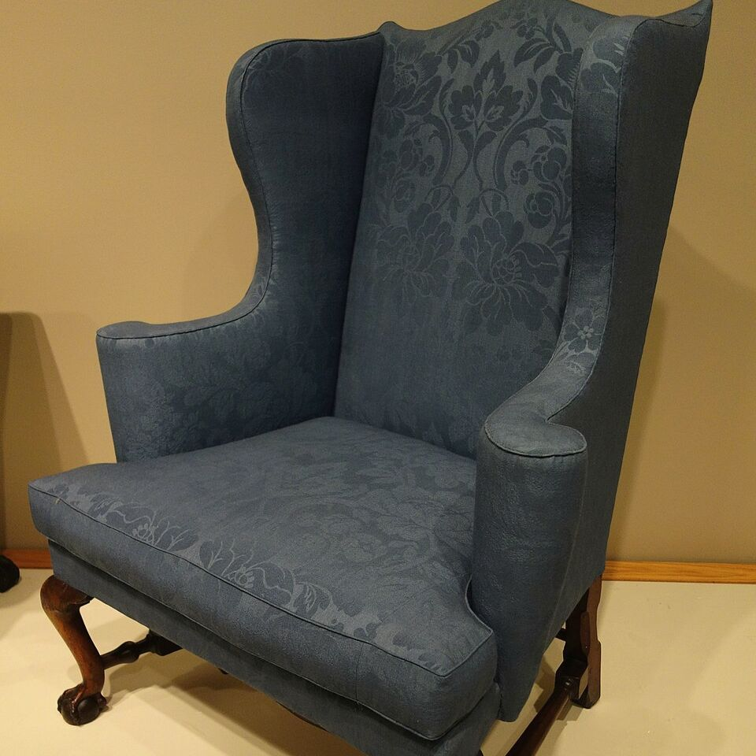
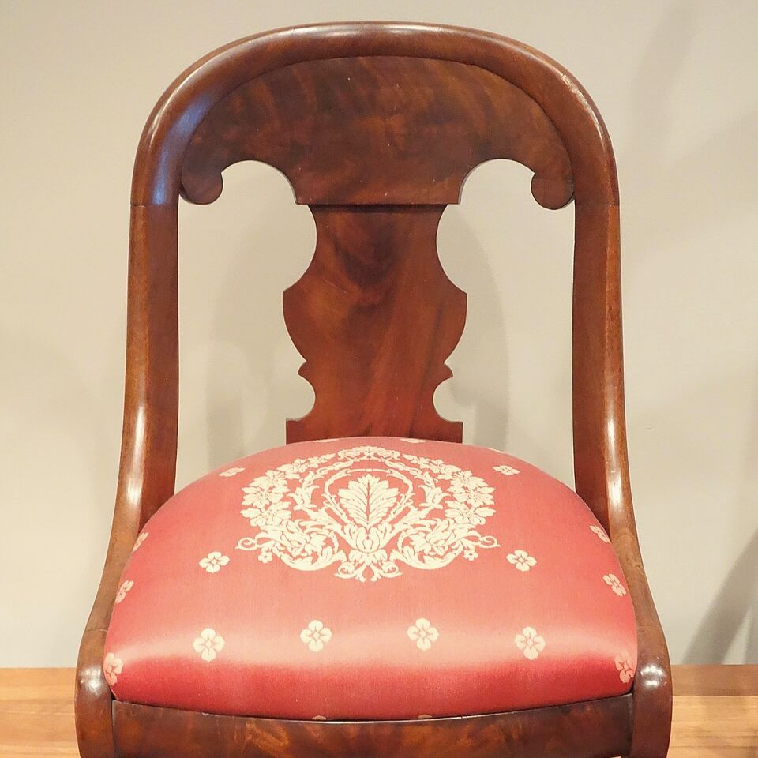
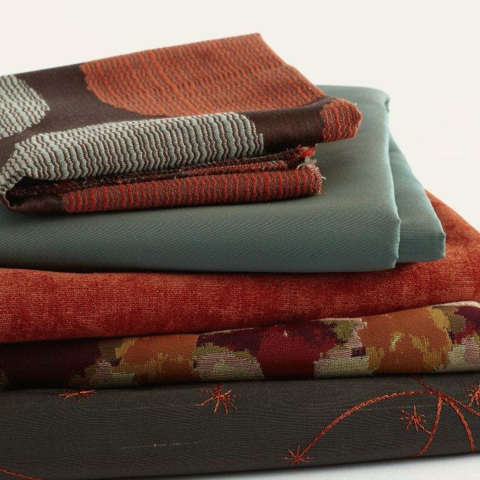
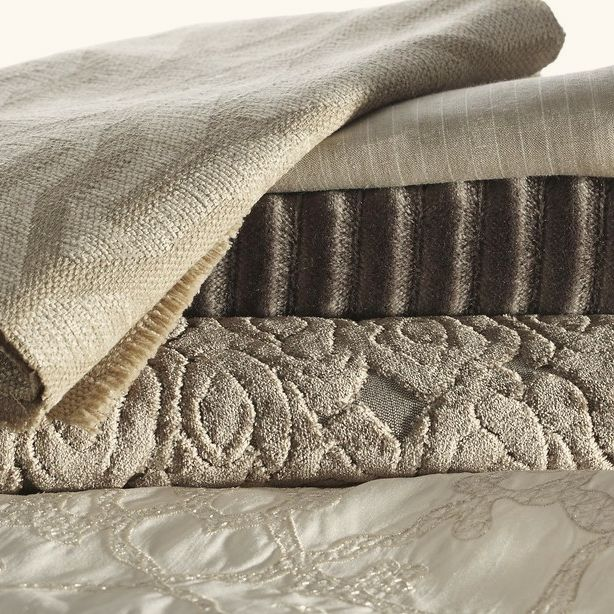

Upholsterer · Cambridge and the Waikato · Made by hand
Your good chair, made good again.
Re-covered, one at a time. No.of one
Maia and Pete rebuild armchairs, sofas and dining chairs in a workshop in Cambridge. The frame is checked, the springs and webbing renewed, the padding built back by hand, and the cloth stitched on in your choice of fabric.

What we re-cover
Furniture worth keeping, brought back to be sat on. Each piece is stripped, repaired and rebuilt in the workshop, never patched over.
-
Armchairs
Wing, club and lounge chairs, stripped to the frame and rebuilt.
-
Sofas
New foam, new springs and a fresh cloth for two or three seats.
-
Dining chairs
Drop-in seats and padded backs, done in sets of four or more.
-
Headboards
Buttoned, channelled or plain, made to the width of your bed.
-
Cushions
Seat cushions, window seats and squabs, cut and sewn to fit.
-
Boat and van seats
Marine vinyl and canvas for boats, caravans and campervans.
Choose a cloth
Pick a strip to see the cloth. Samples are on the workshop rail; we also bring a case of them to your door.
Wall label
Oat linen
A loose, natural weave that softens with use. Good for armchairs in a bright room.
Natural fibre · hard-wearing · 140 cm wide
Slate herringbone
A tight wool weave in blue-grey. Holds its shape on dining chairs and sofas.
Wool blend · hard-wearing · 140 cm wide
Ochre velvet
A deep pile with a sheen that shifts in the light. Best on a statement chair.
Cotton velvet · medium wear · 137 cm wide
Rust stripe
A woven stripe on a warm ground. Lines are matched across the seams.
Cotton and linen · medium wear · 140 cm wide
Sage bouclé
A looped, textured cloth that hides the odd mark. Popular for headboards.
Polyester blend · hard-wearing · 145 cm wide
Midnight check
A fine check in deep blue and sand. A classic on a club chair or dining set.
Wool blend · hard-wearing · 140 cm wide
- 1
Look
Maia sees the piece, checks the frame and talks cloth.
- 2
Strip
Old cloth and padding come off. Springs and webbing are renewed.
- 3
Rebuild
Padding is built up by hand, then the new cloth is cut and sewn.
- 4
Return
It comes home wrapped, and we set it in the room you want it.
From the workshop
Photos are stand-ins for this sample.



One chair at a time, from frame to final stitch.
You see the frame before it is covered, and you decide on any repair before it is done. The same two people work on your piece from start to finish.
What clients say
Sample reviews written for this style demo.
out of 5, from 27 Google reviews
“My grandmother's armchair was falling apart. Maia rebuilt it and found a cloth I would never have picked. It looks as if it was always meant to be that colour.”
HelenLeamington· Armchair
“Six dining chairs, done in under three weeks. The seams line up and the seats are firm without being hard.”
TomHautapu· Dining chairs
“They came to the house with a case of samples and left us to think. The headboard is exactly the shape we drew on the back of an envelope.”
ArohaFencourt· Headboard
“Re-covered the cushions on our launch. Salt and sun had destroyed the old ones; the new ones have lasted two summers already.”
SioneKarāpiro· Boat seats
Where we work
The workshop is in Cambridge. We collect and return furniture across Cambridge and the towns around it.
Cambridge suburbs: Leamington, Hautapu, Fencourt, Pukerimu, Karāpiro, Maungatautari and more.
- Cambridge0–10 km
- Hamilton25 km
- Te Awamutu25 km
- Tirau30 km
- Matamata35 km
Book a visit
Call or text Maia. Send a photo of the chair and its size, and she will tell you what it needs.
- Mon–Fri
- 8:00 am – 5:00 pm
- Saturday
- By appointment
- Reply
- Within 2 working days